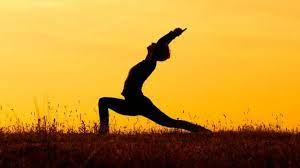

YOGA
"Yoga is the journey of the self, through the self, to the self"
Sukhasana

This is an amazing one for beginners as it gives one the desired comfort. asana is beyond the horizons of the physical dimension and gives a spiritual bliss. Sukhasana is best to reduce anxiety and stress and mental tiredness.
It corrects the body posture and stretches the chest and spine.
Steps: Sit with the legs tucked inside the opposite thighs and the spine should be vertically straight. The hands should be placed on the knees and breathe in and out gently.
Balasana
Balasana is beneficial for your lymphatic system and nervous system.
It will calm your mind and release stress. It stretches your thighs, hips and ankles.
It relieves neck and back pain.
Steps:Start by kneeling down and sitting on your heels. Now, bend forward till your chest touches your thighs. Let your hands rest on the side. Hold this position as long as possible and breathe deeply
Paschimottanasana
Paschimottanasana will stretch your spine, hamstring and lower back.Apart from relieving stress, this pose will ease the symptoms of PMS, improves digestion, stimulated liver, reduce fatigue and relieves symptoms of menopause.
Steps :: Begin by sitting down with your feet extended forward. Now bend forward till your stomach touches your thighs. Hold your feet with your hands. Hold this position for 30 seconds and then return to the original position
Suryanamaskara

The Surya Namaskara or Sun Salutation does more than warm up the muscles and get the blood flowing. It stretches and tones most of the major muscles, trims the waist, tones the arms, stimulates the digestive system, and balances the metabolism.
Surya Namaskar is a whole package of good health and the best way to lose weight.
Steps: Stand straight on your leg.Inhale deeply and lift your arms overhead.Bend forward and exhale out. Now jump your feet back to the plank pose.Hold it for around 5 full breathes.Next drop the knees down, and place your lower body to the floor Extend your legs keeping your hands under the shoulders Now inhale halfway to turn in to the cobra pose. Switch to downward dog facing pose by exhaling. Hold it for 5 breathes While exhaling, jump up to your feet on top of the floor and bend. Inhale and lift up your arms overhead. Exhale and relax.
Trikonasana
The ultimate Triangle pose is a highly beneficial yoga pose for several health issues. Though it does not directly contribute to your weight loss. It enhances digestion and thus reduces the fat deposits in belly, thereby the best yoga to reduce belly fat. It also includes muscles reducing your born fat.
Steps: Stand straight with your hands overhead. Now widen your legs sideways.Stretch yourself down with your hand touching the same feet, just like a triangle. Your upper hand should be straight facing the ceiling along with your eyes.Hold up the pose for around 5-6 seconds Now return back and repeat on the other side.
Parivrtta Utkatasana
The Parivrtta Utkatasana is also called the Yoga’s version of the squat. But you must know that it is a little more intense and tones the abdominal muscles, works the quads and glutes.The asana also improves the lymph system and the digestive system. It is a great way to lose weight.
Steps: Stand tall with legs together and inhale to reach arms straight up overhead. As you exhale sit back over your heels until knees are at a 90 degree angle. Pull hands in a prayer position into your chest as you slide your shoulder blades down. Hold while you inhale and as you exhale twist your left elbow across your knees. Press your elbow against the outer edge of your right knee. Be sure to keep your heart above your hips. Hold and breathe for 30 seconds. Return hands to center and switch sides.
created by Sentinals Meditation | all rights reserved!